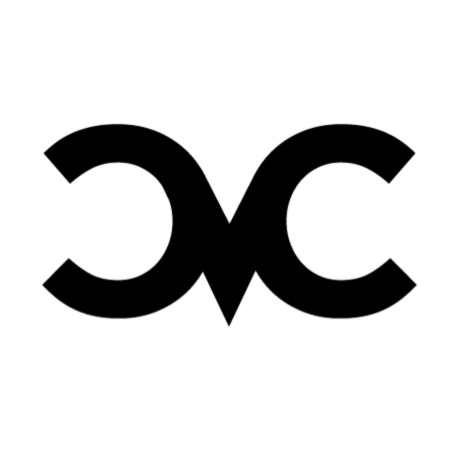

Accurate font sizing requires knowing this tablet's exact pixel density.
Select your tablet model for instant calibration.
Place a standard credit card flat on the screen. Adjust until the outline matches exactly.
Configure the patient's workstation parameters for calibrated near-point evaluation.